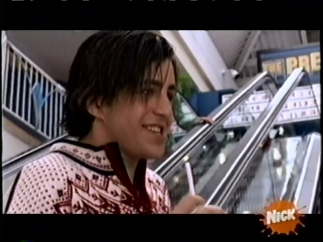
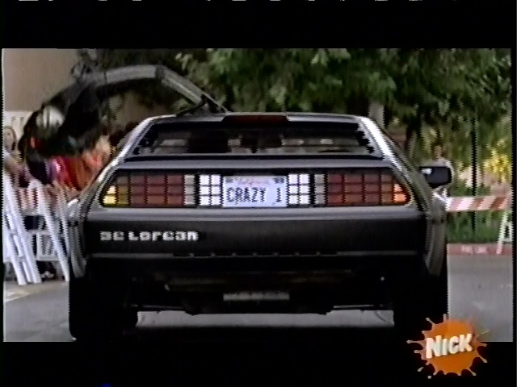
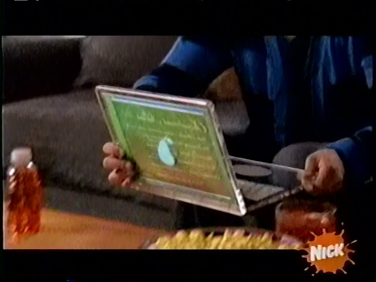
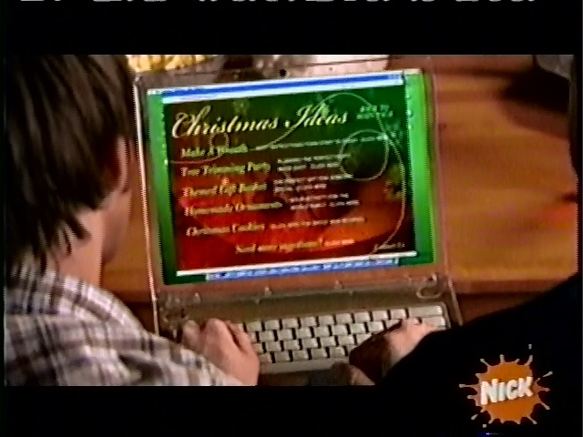

The Internet is Serious Business!
Home > Television > Nickelodeon > Drake & Josh > Watching the Premiere of Merry Christmas, Drake & Josh
When I first started seeing the promos for this movie on Nickelodeon near the end of 2008, I was very happy and excited: Drake & Josh hadn't aired any new episodes since September 2007, and I recall that, for maybe a few months prior to the premiere of this movie, even reruns of the existing episodes had stopped, so at the time I was rather starved of my regular dose of Drake & Josh.
By December 2008, I did not watch TV as obsessively as I did in the past; if the time wasn't convenient for me, I would usually miss premieres and just watch the rerun when it was convenient. For a new Drake & Josh movie, however, I certainly made an exception, and turned on our wall-mounted TV a little before 8 P.M. on Friday, 5 December 2008 to watch it. (Oddly enough, when I dig into my memory of this event, somehow I remember it premiering on a weekend afternoon during winter break from school, not on a Friday evening at the beginning of December.) I even recorded the entire premiere on a VHS tape, which I still have—so if you would like to know, for example, what advertisements aired during the commercial breaks of the premiere, I can tell you.
Despite airing almost 15 months after the last new Drake & Josh episode aired, I noticed that all of the main and recurring cast looked almost unchanged since the fourth season of the show, with (I suppose) two exceptions: Walter (Jonathan Goldstein) and Josh, who both had noticeably longer hair in the movie than in the show—in particular, I remember that when I first saw Josh's haircut while watching the premiere, I thought it was quite emo:

Seeing Miranda Cosgrove as Megan Parker again and Jerry Trainor as Crazy Steve again was a bit strange. At the time, iCarly had been airing frequently on Nick for well over a year, and I watched it frequently as well, so I started perceiving Miranda more as Carly Shay and Jerry more as Spencer Shay instead of their old Drake & Josh characters. When Merry Christmas, Drake & Josh premiered, and I saw Miranda Cosgrove and Jerry Trainor on-screen during the premiere, I recall that I did, in fact, see them first as their iCarly characters, rather than as Megan Parker and Crazy Steve, respectively.
Near the beginning of the film, when Crazy Steve pulls out his slate smartphone (AKA an iPhone clone) during the Christmas party, I recall being slightly disappointed, but not really that surprised. At the time, many of my schoolmates had already started using iPhones or iPhone clones, so I didn't find it very unusual when that now-dominant style of cell phone made its way into a movie. Still, though, this was 2008, back when the slate smartphone had not yet become ubiquitous and there was still some degree of competition between the various cell phone form factors, so I wasn't very happy when one of the characters pulled out an iPhone clone. (Josh, of course, being the smart fellow that he is, pulls out a wonderful little flip phone—the One True Form Factor—a little later on during the party scene.)
Also, when Crazy Steve arrived at the Christmas parade later in the movie, I remember being very impressed at his car with the cool doors:

I can recall being pretty angry at Judge Newman when he read the charges (Resisting arrest, damaging state property, creating a hole, attempting to escape from a federal penitentiary
) against Drake and Josh; he seemed to be ignorant of the fact that this was Drake and Josh, who are such cool and awesome guys that they are pretty much above jail.
Like probably many others who watch it for the first time, I can remember that I absolutely hated Officer Gilbert for most of the movie, due to his being a constant, enormous jackass towards Drake and Josh. Near the end, though, when Drake and Josh very kindly opened his heart to Christmas again, he did redeem himself in my eyes. Also, near the beginning of the film, when he introduces himself to Drake and Josh as Perry J. Gilbert, and Drake then begins to mock the name Perry, my mind immediately began thinking about Perry the Platypus. (Thanks, Phineas and Ferb!)
I was really amazed when I first saw the transparent laptop (which was a prop, of course, but I did not know this back then) that Josh used in the movie:

It has been over twelve years since this movie premiered, and the world still doesn't have fully-functional, transparent laptops—what's up with that?
Throughout the premiere, Nickelodeon kept airing promos reminding us that they would show the full music video for Miranda Cosgrove's song, About You Now
, immediately after the movie ended, which they did. The music video was alright, I suppose, but apparently not very memorable for me; only after I re-watched my VHS tape recording (which, by the way, ends right in the middle of the video) was I reminded of the fact that they aired it after the movie.


 All written materials on this Web site are my own, and all are released under the Do What the Fuck You Want to Public License Version 2.
All written materials on this Web site are my own, and all are released under the Do What the Fuck You Want to Public License Version 2.
This page last modified on 30 March 2021.